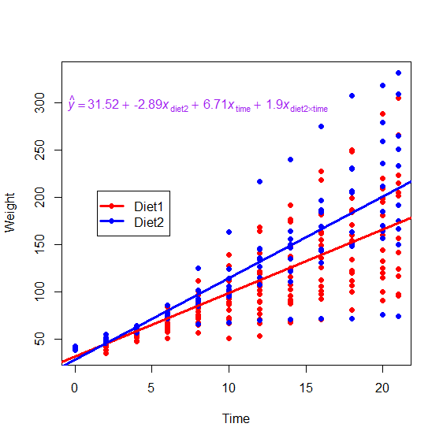

We've talked about categorical variables, and we've talked about interactions. Remember what an interaction is: the
slope for one variable may change depending on another variable. (In the example we discussed before, there was a strong relationship
between length and RT among the low-frequency words, but not so much among the high-frequency words.) Interactions are easier to
visualize and understand when they're interactions between one categorical variable and one continuous variable: they just mean that
each group has a different regression line with a different slope.
Consider, for instance, the below example. This dataset comes from baby chicks that were fed different diets and were
weighed every day. What we see from the graph is that the chicks fed Diet 2 grow faster than the chicks fed Diet 1 (i.e., their
regression line has a steeper slope).

The regression equation (shown on the graph in purple) tells this same story. Diet 1 is the baseline level, so its
intercept (the predicted weight of the chicks at day 0) is 31.52 grams, and its slope is 6.71 (meaning that chicks on this diet tend
to get 6.71 grams heavier per day). For Diet 2, the intercept is 2.89 grams lower than Diet 1, but the slope is steeper; chicks on
Diet 2 gain 8.61 (i.e., 6.71 + 1.9) grams per day.
This example also illustrates a serious problem, though. Recall that in the previous activity, when we discussed
categorical variables, I discussed intercept differences like they're group differences—i.e., animal words had a slightly
higher intercept than plant words, and animal words' reaction time on average is slower than plant words. That logic will be wrong in
the present example. Notice that chicks on Diet 2 are, on average, heavier than chicks on Diet 1, if we average across time (the
blue line is usually above the red line; the blue dots tend to be higher than the red dots). However, the coefficient we get here for
the group comparison is -2.89, suggesting that Diet 2 is lower than Diet 1. It would be incorrect to look at that
coefficient and say that Diet 2 chicks are lighter on average than Diet 1 chicks.
The reason for this problem is because the -2.89 coefficient isn't describing the difference between diet 2 and diet
1 on average. It's describing how different they are at day zero (i.e., at the intercept). As you can see from the
graph, the regression lines have different slopes, and thus they cross. In other words, on most days, Diet 2 chicks are heavier than
Diet 1 chicks; however, because the lines have different slopes, they eventually cross. If we followed these lines way back to Day
-1000, the blue line would be far below the red line. You can imagine how this would be a serious problem if we are doing research in
which age is a variable. For example, if I do some research comparing L1 and L2 speakers, and one of my variables is the person's age
in days (so, e.g., a 20-year-old is 7305 days old), then all my data are up in the high thousands, but my regression coefficients
will be describing the group differences at Day 0. If there is even a tiny difference between the slopes of the regression lines, it
will become a massive difference in intercepts (you can try drawing graphs for yourself to see this). That means that if your
regression includes interactions, you cannot directly interpret intercept differences (i.e., coefficients) as group
differences.
The solution is to center the variables that are involved in the interaction. Centering age means
subtracting the mean age from each person's age. It has the effect of shifting the cloud of data points over so that the intercept is
in the middle of the data, without changing the overall pattern of the data. When you do this, intercept differences will indeed
correspond to average group differences. Below is a graph of the same chick weight data as before, after being centered:
The only thing that's changed about the graph is the x-axis; now zero is right in the middle of the data, instead of
over on the edge. You can also see from the regression formula that the line slopes and interaction have not changed, because the
overall pattern of the dots has not changed, it's just been moved to the left. What's changed is the intercept and the group
difference. The intercept for Diet 1 is now 102.88; instead of describing the average weight of these chicks at day 0, it now
describes their average weight halfway through the trial (i.e., at the "middle" time). And the group difference is now 17.31,
indicating that chicks on Diet 2 are on average (averaged across days) that much heavier than chicks on Diet 1.
Any time you have interactions, you need to center if you are interested in looking at main effects (like overall
group differences.) Forgetting to center, and then wrongly interpreting group differences, is an easy and very common mistake to
make. Here is an example of a case where a published (and
peer-reviewed) paper had to be corrected because of this kind of error. Some more detailed discussion of this issue, focused
specifically on interactions between categorical variables, is available here.
For much more information about coding, centering, and various ways to deal with interactions, you can browse the first set of slides
and first set of sample code here.
This concludes our whirlwind tour of regression concepts. Things may seem confusing and abstract now, because we have
gone through very many concepts in very little time. As I mentioned at the beginning, if you intend to actually use regression, I
strongly recommend you take a semester-long regression class and/or read Multiple Regression and Beyond by Timothy Keith.
For now, continue to the questions below to practice the concepts you have read about here.
Describe a research issue in your area of study that regression would be useful to solve. Explain what the challenge is and
why regression would be helpful. This needs to be specific to regression; i.e., explain why other methods like ANOVA or
t-tests can't address the issue but regression can.
When you finish this activity, you are done with the module (assuming all your work on this and the
previous tasks has been satisfactory). However, you may still continue on to the advanced-level
task for this module if you wish to complete this module at the advanced level (if you're aiming for a higher
grade or if you are just particularly interested in this topic). Otherwise, you can return to the
module homepage to review this module, or return to the class homepage to select a different module
or assignment to do now.